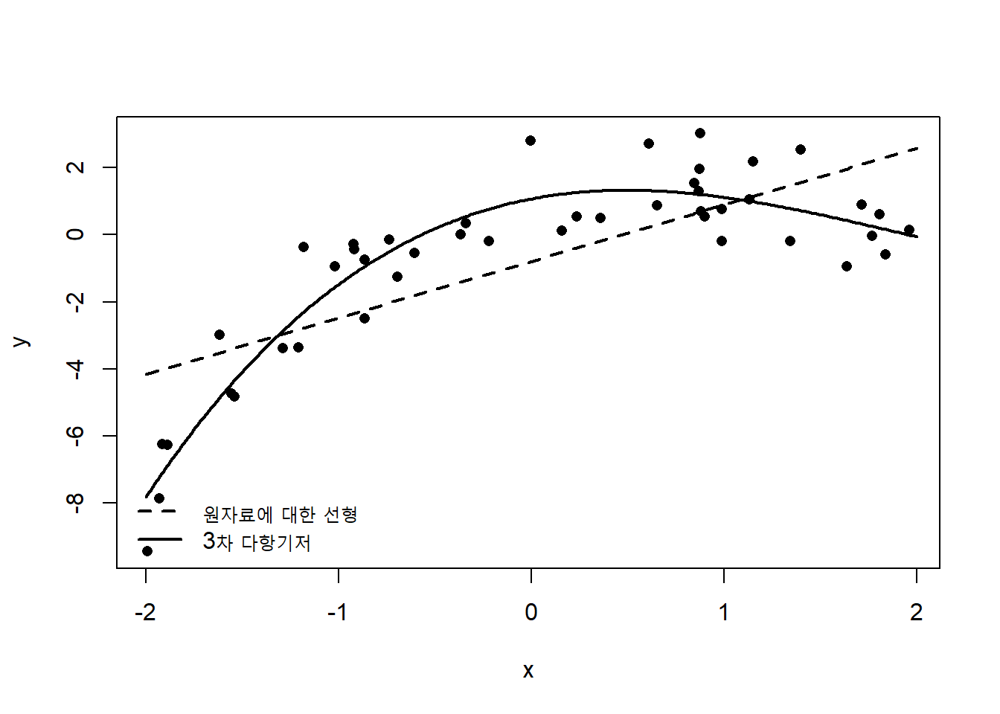
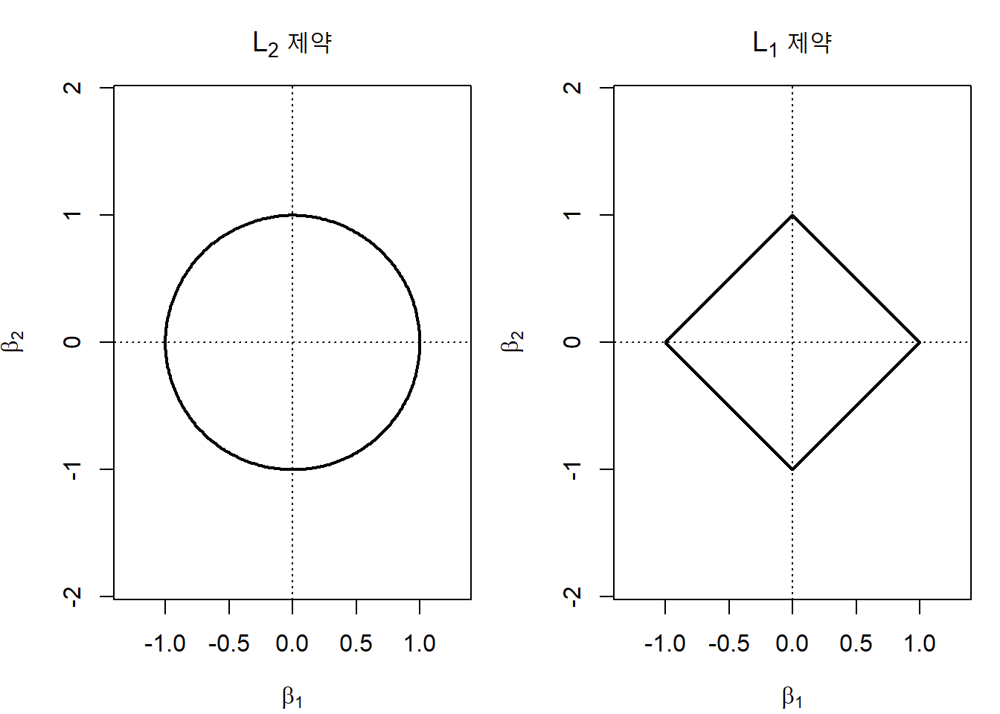
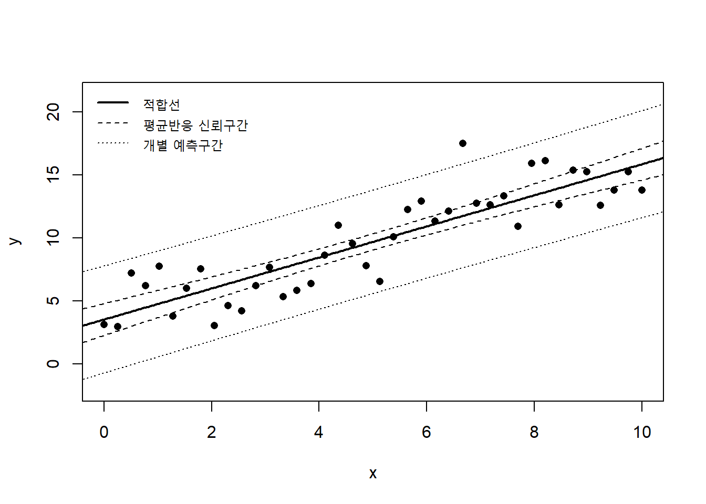
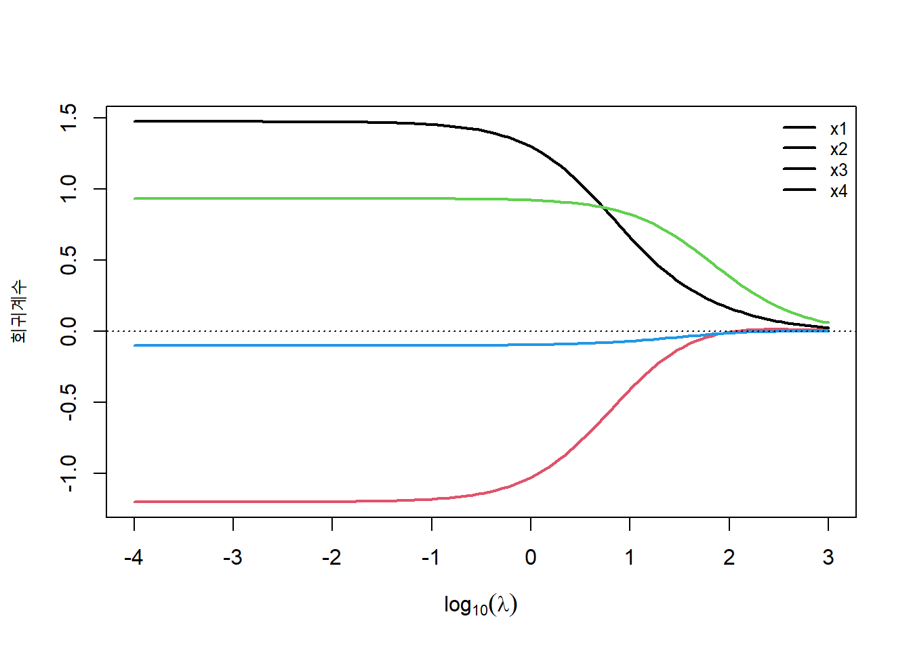
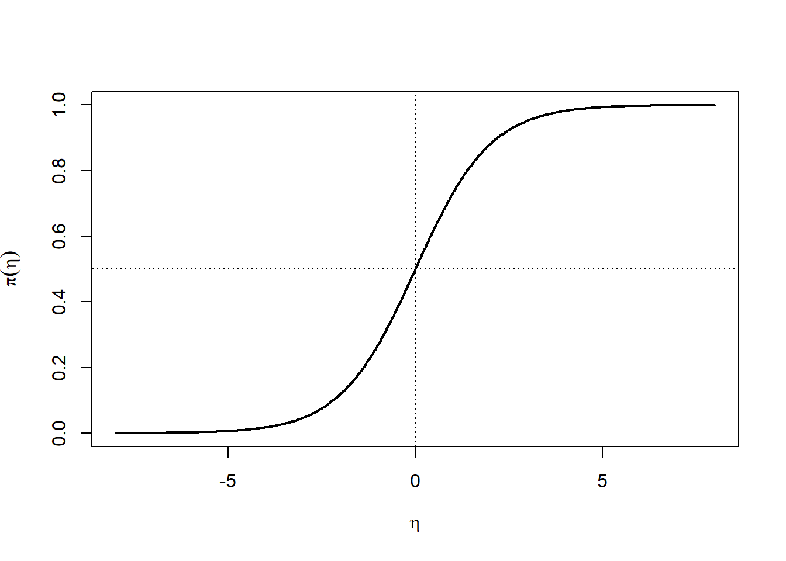
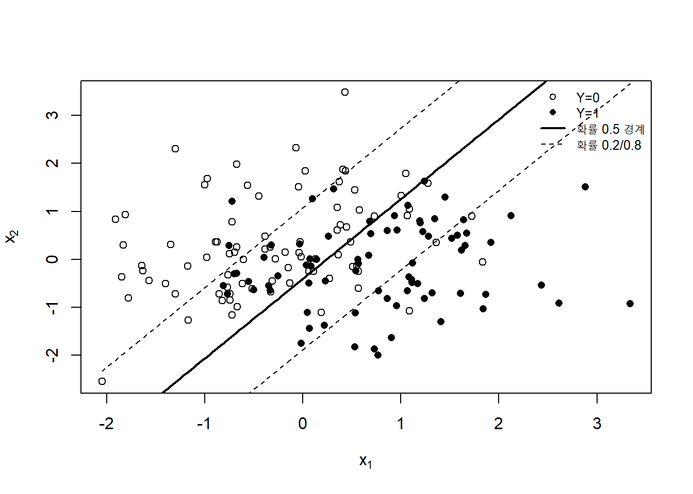
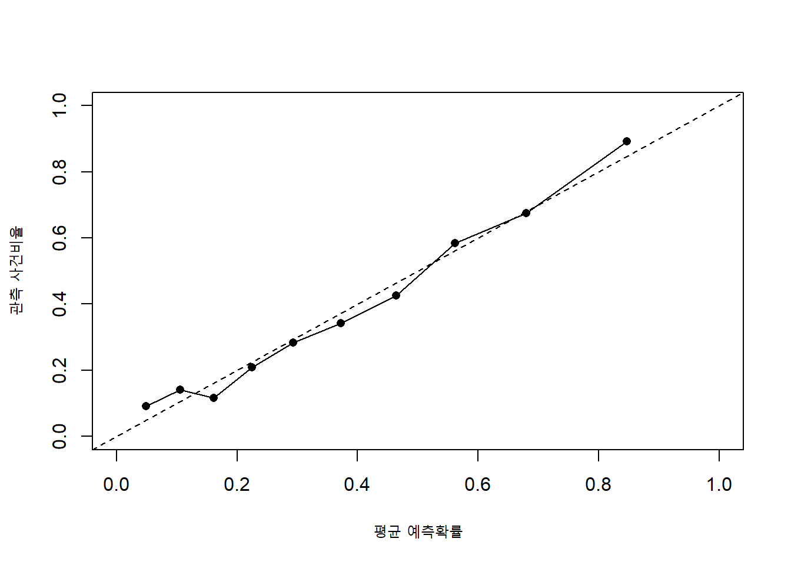
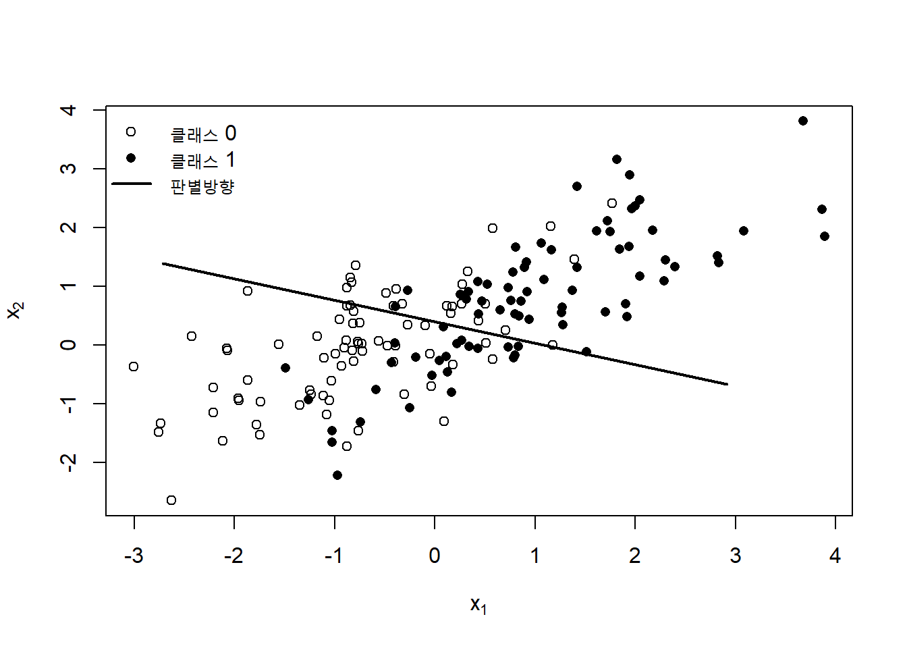
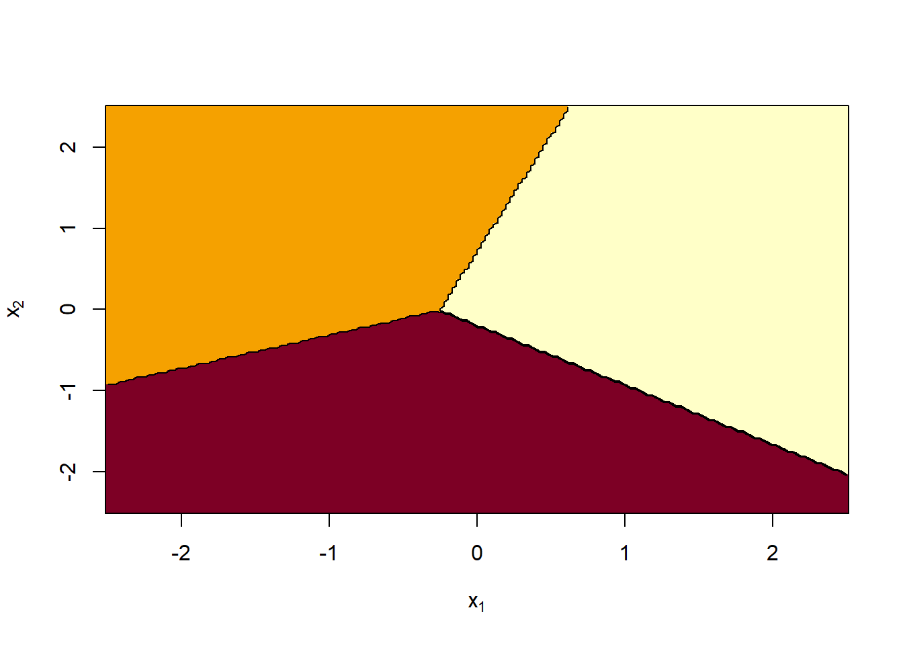
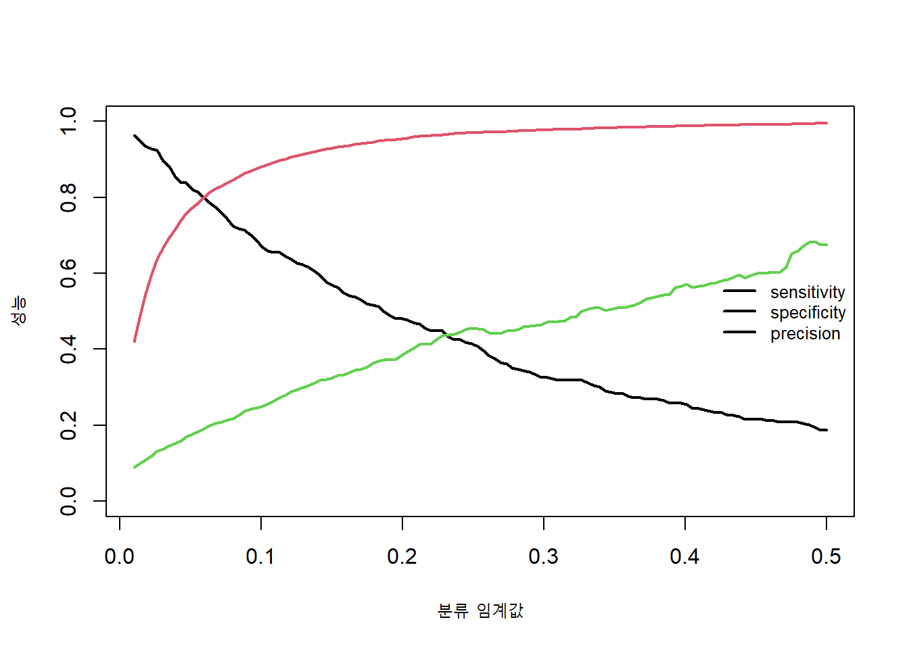

3 선형 모형
선형 모형은 통계학과 머신러닝을 연결하는 가장 기본적인 모형군이다. 선형 회귀, 로지스틱 회귀와 선형 판별분석(linear discriminant analysis)은 서로 다른 문제를 다루지만, 입력변수의 선형결합을 통해 예측에 필요한 정보를 요약한다는 공통점을 갖는다. 이러한 단순한 구조 덕분에 선형 모형은 계산이 빠르고, 결과를 해석하기 쉬우며, 작은 표본에서도 비교적 안정적으로 사용할 수 있다. 또한 규제, 기저함수(basis function), 커널과 신경망을 이해하기 위한 출발점이 된다.
관측값을 \((\mathbf x_i,y_i)\)라고 하자. 선형 모형의 핵심은 입력벡터 \(\mathbf x_i\in\mathbb R^p\)를 하나의 선형 예측자(linear predictor)
\[ \eta_i = \beta_0+\mathbf x_i^\top\boldsymbol\beta \tag{3.1}\]
로 변환하는 것이다. 회귀에서는 \(\eta_i\)가 조건부 평균을 직접 나타내고, 로지스틱 회귀에서는 사건확률의 로짓을 나타내며, 선형 판별분석에서는 각 클래스에 대한 판별점수의 일부가 된다. 따라서 선형 모형을 이해한다는 것은 단순히 직선을 적합하는 방법을 배우는 것이 아니라, 표현, 확률모형, 손실함수, 규제와 의사결정 규칙이 어떻게 결합되는지를 이해하는 것이다.
Chapter 2에서 모형 평가와 선택을 학습 절차 전체의 일부로 다루었다. 이 장에서는 동일한 관점을 유지한다. 모형을 적합하는 것만으로 분석이 끝나는 것이 아니라, 변수의 표현과 척도를 결정하고, 훈련자료 안에서 모수와 하이퍼파라미터를 추정하며, 독립적인 자료에서 예측성능과 보정도를 평가해야 한다.
중요선형이라는 말의 의미
선형 모형은 반드시 원래 입력변수에 대해 직선인 모형을 의미하지 않는다. 변환된 특성 \(\phi_1(\mathbf x),\ldots,\phi_m(\mathbf x)\)에 대해
\[ f(\mathbf x) = \beta_0+ \sum_{j=1}^{m}\beta_j\phi_j(\mathbf x) \]
처럼 계수에 선형이면 선형 모형의 계산 구조를 그대로 사용할 수 있다. 다항회귀, 스플라인 회귀와 범주형 변수의 더미변수 표현이 대표적인 예이다.
3.1 기본 형식
3.1.1 자료와 선형 예측자
훈련자료를
\[ \mathcal D = \{(\mathbf x_i,y_i)\}_{i=1}^{n}, \qquad \mathbf x_i=(x_{i1},\ldots,x_{ip})^\top \tag{3.2}\]
라고 하자. 절편을 포함한 설계행렬(design matrix)은
\[ \mathbf X = \begin{bmatrix} 1 & x_{11} & \cdots & x_{1p}\\ 1 & x_{21} & \cdots & x_{2p}\\ \vdots & \vdots & \ddots & \vdots\\ 1 & x_{n1} & \cdots & x_{np} \end{bmatrix}, \qquad \boldsymbol\beta = \begin{bmatrix} \beta_0\\ \beta_1\\ \vdots\\ \beta_p \end{bmatrix} \tag{3.3}\]
로 나타낼 수 있다. 전체 관측값의 선형 예측자는
\[ \boldsymbol\eta = \mathbf X\boldsymbol\beta \tag{3.4}\]
이다. 선형 모형은 \(p\)개의 입력변수를 \(p+1\)개의 계수로 요약한다. 각 계수는 다른 변수를 고정했을 때 해당 특성이 선형 예측자에 미치는 국소적 변화를 나타낸다.
연속형 변수와 범주형 변수가 함께 있는 경우에도 설계행렬을 구성할 수 있다. \(K\)개 범주를 가진 변수는 보통 기준범주 하나를 제외한 \(K-1\)개의 지시변수로 표현한다. 상호작용(interaction)을 포함하려면 두 변수의 곱을 새로운 열로 추가하고, 비선형성을 표현하려면 제곱항이나 기저함수를 추가한다.
예를 들어 한 연속형 변수 \(x_1\), 이진변수 \(x_2\)와 상호작용을 포함한 모형은
\[ \eta = \beta_0+ \beta_1x_1+ \beta_2x_2+ \beta_3x_1x_2 \tag{3.5}\]
로 쓸 수 있다. \(x_2=0\)일 때 \(x_1\)의 기울기는 \(\beta_1\)이고, \(x_2=1\)일 때 기울기는 \(\beta_1+\beta_3\)이다. 따라서 주효과의 의미는 상호작용이 포함되면 조건부로 해석해야 한다.
3.1.2 선형 모형의 네 구성요소
대부분의 선형 학습 문제는 다음 네 요소로 정리할 수 있다.
- 표현: 입력을 어떤 특성으로 나타낼 것인가?
- 모형: 선형 예측자와 반응변수를 어떤 확률적 관계로 연결할 것인가?
- 손실함수: 예측오차를 어떻게 측정할 것인가?
- 복잡도 제어: 계수의 크기와 수를 어떻게 제한할 것인가?
이를 하나의 최적화 문제로 표현하면
\[ \widehat{\boldsymbol\beta} = \arg\min_{\boldsymbol\beta} \left[ \frac{1}{n} \sum_{i=1}^{n} L\{y_i,\eta_i(\boldsymbol\beta)\} + \lambda\Omega(\boldsymbol\beta) \right] \tag{3.6}\]
이다. 선형 회귀는 주로 제곱손실을, 로지스틱 회귀는 로그손실을 사용한다. 릿지 회귀(ridge regression)는 \(\ell_2\) 패널티를, LASSO는 \(\ell_1\) 패널티를 사용한다.
| 모형 | 선형 예측자와 반응의 연결 | 대표 손실함수 | 대표 규제 |
|---|---|---|---|
| 선형 회귀 | \(E(Y\mid\mathbf X)=\eta\) | 제곱손실 | 릿지, LASSO |
| 로지스틱 회귀 | \(\operatorname{logit}\{P(Y=1\mid\mathbf X)\}=\eta\) | 로그손실 | 릿지, LASSO |
| 선형 SVM | 분류점수 \(f(\mathbf x)=\eta\) | 힌지손실 | \(\ell_2\) 규제 |
| 선형 판별분석 | 클래스별 선형 판별점수 | 음의 로그우도 또는 분류오차 | 공분산 축소 |
3.1.3 확률적 모형과 예측함수
선형 모형은 확률분포를 명시하는 방식과 손실함수를 직접 최소화하는 방식으로 모두 유도할 수 있다. 선형 회귀에서
\[ Y\mid\mathbf X=\mathbf x \sim N\{\beta_0+\mathbf x^\top\boldsymbol\beta,\sigma^2\} \tag{3.7}\]
를 가정하면 최대우도추정은 제곱오차 최소화와 동일하다. 로지스틱 회귀에서
\[ Y\mid\mathbf X=\mathbf x \sim \operatorname{Bernoulli}\{\pi(\mathbf x)\} \tag{3.8}\]
와 로짓 연결함수를 사용하면 최대우도추정은 교차엔트로피(cross-entropy) 손실 최소화와 동일하다.
확률모형은 불확실성 추정과 자료생성 과정의 해석에 유용하다. 반면 손실함수 관점은 예측문제를 더 일반적으로 표현하고, 규제나 비표준 손실함수를 도입하기 쉽다. 두 관점은 서로 경쟁하는 것이 아니라 동일한 학습문제를 다른 언어로 설명한다.
3.1.4 기저함수와 특성 확장
원래 변수에 대한 선형성이 부적절하더라도 변환된 특성에 대해 선형 모형을 적합할 수 있다. 기저함수 벡터를
\[ \boldsymbol\phi(\mathbf x) = \{\phi_1(\mathbf x),\ldots,\phi_m(\mathbf x)\}^\top \tag{3.9}\]
라고 하면
\[ f(\mathbf x) = \beta_0+ \boldsymbol\phi(\mathbf x)^\top\boldsymbol\beta \tag{3.10}\]
로 표현한다. 단일 변수 \(x\)에 대한 3차 다항기저는
\[ \boldsymbol\phi(x) = (x,x^2,x^3)^\top \tag{3.11}\]
이다. 모형은 \(x\)에 대해서는 비선형이지만 계수에 대해서는 선형이다.
기저 확장은 표현력을 높이지만 차원을 증가시키고 다중공선성과 과적합 위험을 키울 수 있다. 따라서 기저함수의 수와 형태는 교차검증으로 선택하거나 규제와 함께 사용해야 한다. 고차 다항식은 경계에서 크게 진동할 수 있으므로 스플라인과 같은 국소 기저가 더 안정적인 경우가 많다.
그림 3.1은 동일한 선형 추정 알고리즘이 특성 표현에 따라 매우 다른 함수를 학습할 수 있음을 보여준다. 머신러닝에서 모형의 유연성은 알고리즘뿐 아니라 입력을 어떻게 표현하는가에 의해 결정된다.
3.1.5 변수의 중심화와 표준화
변수의 단위가 서로 다르면 계수의 크기를 직접 비교하기 어렵고, 규제 패널티가 특정 변수에 더 강하게 작용할 수 있다. 연속형 변수 \(x_j\)를
\[ z_{ij} = \frac{x_{ij}-\bar x_j}{s_j} \tag{3.12}\]
로 표준화하면 평균이 0이고 표준편차가 1인 척도로 변환된다. 표준화는 릿지와 LASSO에서 특히 중요하다. 그렇지 않으면 단위가 큰 변수는 작은 계수만으로도 큰 영향을 만들 수 있어 패널티를 상대적으로 적게 받는다.
표준화에 사용되는 평균과 표준편차는 반드시 훈련자료에서 계산해야 한다. 검증자료와 시험자료는 훈련자료의 \(\bar x_j\)와 \(s_j\)를 이용해 변환한다. 전체 자료에서 표준화한 뒤 분할하면 평가자료의 정보가 학습 과정에 유입되는 데이터 누출이 발생한다.
절편은 일반적으로 패널티를 부과하지 않는다. 입력변수가 중심화되어 있으면 절편은 반응변수의 평균 또는 기준 로그오즈와 직접 연결되어 해석이 쉬워진다.
3.1.6 규제와 제약조건
규제는 계수의 크기나 구조에 제약을 주어 분산과 과적합을 줄이는 방법이다. 릿지 패널티는
\[ \Omega_{\mathrm{ridge}}(\boldsymbol\beta) = \sum_{j=1}^{p}\beta_j^2 = \lVert\boldsymbol\beta\rVert_2^2 \tag{3.13}\]
이고, LASSO 패널티는
\[ \Omega_{\mathrm{lasso}}(\boldsymbol\beta) = \sum_{j=1}^{p}|\beta_j| = \lVert\boldsymbol\beta\rVert_1 \tag{3.14}\]
이다. 탄력적 그물은 두 패널티를 결합한다.
\[ \Omega_{\mathrm{EN}}(\boldsymbol\beta) = \alpha\lVert\boldsymbol\beta\rVert_1 + \frac{1-\alpha}{2}\lVert\boldsymbol\beta\rVert_2^2, \qquad 0\leq\alpha\leq 1 \tag{3.15}\]
패널티 최적화는 제약된 최적화와 연결된다. 예를 들어 릿지 회귀는 적절한 \(t\)에 대해
\[ \min_{\boldsymbol\beta} \sum_{i=1}^{n}(y_i-\beta_0-\mathbf x_i^\top\boldsymbol\beta)^2 \quad \text{subject to} \quad \lVert\boldsymbol\beta\rVert_2^2\leq t \tag{3.16}\]
와 동등하다. \(\lambda\)가 커질수록 허용되는 계수 공간은 작아진다.

그림 3.2에서 \(\ell_1\) 제약영역은 좌표축 위에 꼭짓점을 갖는다. 손실함수의 등고선이 제약영역과 처음 접하는 지점이 꼭짓점이 될 가능성이 높기 때문에 일부 계수가 정확히 0이 될 수 있다. 반면 \(\ell_2\) 제약은 계수를 연속적으로 축소하지만 일반적으로 정확한 0을 만들지는 않는다. 특성 선택과 희소학습은 Chapter 11에서 자세히 다룬다.
3.1.7 최적화와 정상방정식
목적함수가 미분 가능하면 기울기
\[ \nabla_{\boldsymbol\beta}J(\boldsymbol\beta) \tag{3.17}\]
를 이용해 최적점을 찾을 수 있다. 해석적인 해가 존재하는 선형 회귀에서는 정상방정식(normal equations)을 사용할 수 있다. 로지스틱 회귀처럼 닫힌형태의 해가 없는 경우에는 뉴턴 방법, 반복가중최소제곱(iteratively reweighted least squares) 또는 경사하강법을 사용한다.
경사하강법의 기본 갱신식은
\[ \boldsymbol\beta^{(t+1)} = \boldsymbol\beta^{(t)} - \eta_t \nabla_{\boldsymbol\beta}J\{\boldsymbol\beta^{(t)}\} \tag{3.18}\]
이다. 학습률 \(\eta_t\)가 너무 크면 발산하거나 최적점을 지나칠 수 있고, 너무 작으면 수렴이 느리다. 특성의 척도가 매우 다르면 손실함수의 등고선이 길쭉해져 경사하강법의 수렴이 느려질 수 있으므로 표준화가 계산 측면에서도 도움이 된다.
노트해석적 해와 수치 최적화
해석적인 해가 존재한다고 해서 반드시 역행렬을 직접 계산해야 하는 것은 아니다. 실제 계산에서는 QR 분해나 특잇값 분해를 이용하는 것이 수치적으로 더 안정적이다. 머신러닝에서 식의 유도와 안정적인 구현은 구분해야 한다.
3.2 선형 회귀
3.2.1 조건부 평균 모형
선형 회귀는 연속형 반응변수의 조건부 평균을 선형 예측자로 표현한다.
\[ E(Y\mid\mathbf X=\mathbf x) = \beta_0+\mathbf x^\top\boldsymbol\beta \tag{3.19}\]
관측모형은
\[ y_i = \beta_0+\mathbf x_i^\top\boldsymbol\beta+\varepsilon_i \tag{3.20}\]
로 나타낼 수 있다. \(E(\varepsilon_i\mid\mathbf X)=0\)이면 선형 예측자는 조건부 평균을 올바르게 나타낸다. 오차의 정규성은 최소제곱(ordinary least squares) 계수의 계산 자체에 필요한 가정은 아니지만, 작은 표본에서 전통적인 신뢰구간과 가설검정을 유도할 때 사용된다.
행렬 형태로는
\[ \mathbf y = \mathbf X\boldsymbol\beta+\boldsymbol\varepsilon \tag{3.21}\]
이다.
3.2.2 최소제곱 추정
보통최소제곱법은 잔차제곱합
\[ \operatorname{RSS}(\boldsymbol\beta) = \sum_{i=1}^{n} \{y_i-\beta_0-\mathbf x_i^\top\boldsymbol\beta\}^2 = (\mathbf y-\mathbf X\boldsymbol\beta)^\top (\mathbf y-\mathbf X\boldsymbol\beta) \tag{3.22}\]
을 최소화한다. 목적함수를 미분하면
\[ \frac{\partial\operatorname{RSS}}{\partial\boldsymbol\beta} = -2\mathbf X^\top (\mathbf y-\mathbf X\boldsymbol\beta) \tag{3.23}\]
이고 이를 0으로 두면 정상방정식
\[ \mathbf X^\top\mathbf X\widehat{\boldsymbol\beta} = \mathbf X^\top\mathbf y \tag{3.24}\]
을 얻는다. \(\mathbf X\)의 열이 선형독립이고 \(\mathbf X^\top\mathbf X\)가 가역이면
\[ \widehat{\boldsymbol\beta}_{\mathrm{OLS}} = (\mathbf X^\top\mathbf X)^{-1} \mathbf X^\top\mathbf y \tag{3.25}\]
이다.
방정식 3.25은 이론적으로 중요하지만 실제 계산에서 역행렬을 직접 구하는 것은 권장되지 않는다. 열 사이의 상관이 매우 높거나 변수 수가 많으면 \(\mathbf X^\top\mathbf X\)가 수치적으로 불안정해질 수 있다. QR 분해는 정상방정식을 직접 푸는 것보다 조건수가 덜 악화되고, 특잇값 분해는 랭크 결손과 작은 특잇값을 진단하는 데 유용하다.
3.2.3 기하학적 해석
적합값은
\[ \widehat{\mathbf y} = \mathbf X\widehat{\boldsymbol\beta} = \mathbf H\mathbf y \tag{3.26}\]
이고
\[ \mathbf H = \mathbf X(\mathbf X^\top\mathbf X)^{-1}\mathbf X^\top \tag{3.27}\]
를 모자행렬(hat matrix)이라고 한다. \(\widehat{\mathbf y}\)는 반응벡터 \(\mathbf y\)를 \(\mathbf X\)의 열공간에 직교투영한 결과이다. 잔차벡터는
\[ \widehat{\boldsymbol\varepsilon} = \mathbf y-\widehat{\mathbf y} = (\mathbf I-\mathbf H)\mathbf y \tag{3.28}\]
이며 설계행렬의 모든 열과 직교한다.
\[ \mathbf X^\top\widehat{\boldsymbol\varepsilon} = \mathbf 0 \tag{3.29}\]
절편이 포함되면 잔차의 합은 0이고 적합값의 평균은 반응변수의 평균과 같다.
모자행렬의 대각원소 \(h_{ii}\)를 레버리지(leverage)라고 한다. \(h_{ii}\)가 큰 관측값은 입력공간에서 다른 관측값과 멀리 떨어져 있어 자신의 적합값에 큰 영향을 줄 수 있다. 평균 레버리지는
\[ \frac{1}{n}\sum_{i=1}^{n}h_{ii} = \frac{\operatorname{tr}(\mathbf H)}{n} = \frac{p+1}{n} \tag{3.30}\]
이다.
3.2.4 최소제곱의 통계적 성질
선형 조건부 평균이 올바르고
\[ E(\boldsymbol\varepsilon\mid\mathbf X)=\mathbf 0, \qquad \operatorname{Var}(\boldsymbol\varepsilon\mid\mathbf X) = \sigma^2\mathbf I \tag{3.31}\]
라고 하자. 그러면
\[ E(\widehat{\boldsymbol\beta}\mid\mathbf X) = \boldsymbol\beta \tag{3.32}\]
이고
\[ \operatorname{Var}(\widehat{\boldsymbol\beta}\mid\mathbf X) = \sigma^2(\mathbf X^\top\mathbf X)^{-1} \tag{3.33}\]
이다. 가우스-마르코프 정리에 따르면 OLS는 선형 불편추정량 중 가장 작은 분산을 갖는다. 그러나 예측이 목적이라면 불편성이 항상 최선은 아니다. 릿지 회귀는 약간의 편향을 허용하면서 분산을 크게 줄여 더 작은 예측오차를 얻을 수 있다.
오차분산은
\[ \widehat\sigma^2 = \frac{\operatorname{RSS}}{n-p-1} \tag{3.34}\]
로 추정할 수 있다. 정규오차를 가정하면 계수의 표준오차와 신뢰구간을 계산할 수 있다. 하지만 예측모형의 성능은 계수의 유의성만으로 판단해서는 안 된다. 표본이 크면 예측에 거의 기여하지 않는 변수도 통계적으로 유의할 수 있고, 표본이 작으면 중요한 변수도 불확실성이 커 유의하지 않을 수 있다.
3.2.5 예측과 예측구간
새로운 입력 \(\mathbf x_0\)의 조건부 평균 예측은
\[ \widehat\mu_0 = \widetilde{\mathbf x}_0^\top \widehat{\boldsymbol\beta} \tag{3.35}\]
이다. 여기서 \(\widetilde{\mathbf x}_0=(1,\mathbf x_0^\top)^\top\)이다. 조건부 평균 추정의 분산은
\[ \operatorname{Var}(\widehat\mu_0\mid\mathbf X) = \sigma^2 \widetilde{\mathbf x}_0^\top (\mathbf X^\top\mathbf X)^{-1} \widetilde{\mathbf x}_0 \tag{3.36}\]
이다. 새로운 개별 관측값 \(Y_0\)을 예측할 때는 관측오차 \(\sigma^2\)가 추가된다.
\[ \operatorname{Var}(Y_0-\widehat\mu_0\mid\mathbf X) = \sigma^2 \left[ 1+ \widetilde{\mathbf x}_0^\top (\mathbf X^\top\mathbf X)^{-1} \widetilde{\mathbf x}_0 \right] \tag{3.37}\]
따라서 개별 예측구간은 평균반응의 신뢰구간보다 넓다. 입력값이 훈련자료의 중심에서 멀어질수록 두 구간 모두 넓어진다. 이는 선형 회귀가 외삽을 계산할 수는 있지만, 외삽의 신뢰성이 자동으로 확보되는 것은 아님을 보여준다.

3.2.6 다중공선성
두 개 이상의 특성이 강한 선형관계를 가지면 \(\mathbf X^\top\mathbf X\)의 작은 고유값이 발생하고 계수추정의 분산이 커진다. 이를 다중공선성(multicollinearity)이라고 한다. 다중공선성이 강하면 전체 예측은 비교적 안정적일 수 있지만 개별 계수의 부호와 크기가 표본에 따라 크게 달라질 수 있다.
두 설명변수 \(x_1\)과 \(x_2\)가 거의 동일하다면
\[ \beta_1x_1+ \beta_2x_2 \tag{3.38}\]
의 합은 안정적으로 추정되더라도 \(\beta_1\)과 \(\beta_2\)를 따로 식별하기 어렵다. 이 경우 변수 하나를 제거하거나, 영역 지식을 이용해 합성지표를 만들거나, 주성분을 사용하거나, 릿지 규제를 적용할 수 있다.
분산팽창계수는
\[ \operatorname{VIF}_j = \frac{1}{1-R_j^2} \tag{3.39}\]
로 정의한다. 여기서 \(R_j^2\)는 \(x_j\)를 나머지 설명변수로 회귀했을 때의 결정계수이다. VIF는 진단도구이지 절대적인 제거 기준은 아니다. 예측 목적에서는 교차검증 성능과 안정성을 함께 살펴야 한다.
3.2.7 영향점과 잔차진단
선형 회귀의 예측오차는 일부 관측값에 민감할 수 있다. 큰 잔차를 가진 관측값은 반응축에서 이상하고, 높은 레버리지를 가진 관측값은 입력공간에서 이상하다. 두 특성을 모두 가진 관측값은 계수에 큰 영향을 줄 수 있다.
Cook 거리는 한 관측값을 제거했을 때 전체 적합값이 얼마나 변하는지를 요약한다.
\[ D_i = \frac{e_i^2}{(p+1)\widehat\sigma^2} \frac{h_{ii}}{(1-h_{ii})^2} \tag{3.40}\]
잔차진단의 목적은 단순히 관측값을 제거하기 위한 것이 아니다. 자료입력 오류, 측정체계의 변화, 누락된 비선형성, 분산의 비균질성과 하위집단 구조를 발견하는 데 있다. 관측값 제거는 사전에 정의된 원칙과 실질적 근거가 있어야 하며, 제거 전후의 민감도 분석을 함께 보고하는 것이 바람직하다.
3.2.8 이분산성과 강건 표준오차
오차분산이 입력에 따라 달라지는 경우
\[ \operatorname{Var}(\varepsilon_i\mid\mathbf x_i) = \sigma_i^2 \tag{3.41}\]
라고 쓸 수 있다. 조건부 평균이 올바르고 외생성이 성립하면 OLS 계수는 여전히 불편일 수 있지만, 고전적인 표준오차 공식은 잘못될 수 있다. 추론이 중요하면 이분산성 강건 표준오차나 가중최소제곱을 고려한다.
예측 관점에서는 잔차의 분산구조 자체를 모형화할 수도 있다. 예를 들어 로그변환, 분산함수, 분위수회귀 또는 분포회귀를 사용할 수 있다. 평균 예측이 정확하더라도 예측구간이 잘못 보정될 수 있으므로 점예측과 불확실성 예측을 구분해야 한다.
3.2.9 릿지 회귀
릿지 회귀는 표준화된 특성에 대해
\[ \widehat{\boldsymbol\beta}_{\mathrm{ridge}} = \arg\min_{\boldsymbol\beta} \left[ \lVert\mathbf y-\mathbf X\boldsymbol\beta\rVert_2^2 + \lambda\lVert\boldsymbol\beta\rVert_2^2 \right] \tag{3.42}\]
를 푼다. 절편은 중심화를 통해 분리하거나 패널티에서 제외한다. 해는
\[ \widehat{\boldsymbol\beta}_{\mathrm{ridge}} = (\mathbf X^\top\mathbf X+\lambda\mathbf I)^{-1} \mathbf X^\top\mathbf y \tag{3.43}\]
이다. \(\lambda>0\)이면 \(\mathbf X^\top\mathbf X\)가 특이하더라도 역행렬이 존재할 수 있다.
특잇값 분해를
\[ \mathbf X = \mathbf U\mathbf D\mathbf V^\top \tag{3.44}\]
라고 하면 릿지 회귀는 작은 특잇값 방향을 더 강하게 축소한다. OLS의 각 주성분 방향 계수에
\[ \frac{d_j^2}{d_j^2+\lambda} \tag{3.45}\]
를 곱하는 것과 같다. 정보가 충분한 큰 특잇값 방향은 덜 축소하고, 불안정한 작은 특잇값 방향은 더 많이 축소한다.
릿지의 유효 자유도는
\[ \operatorname{df}_{\mathrm{ridge}}(\lambda) = \operatorname{tr} \left[ \mathbf X (\mathbf X^\top\mathbf X+\lambda\mathbf I)^{-1} \mathbf X^\top \right] = \sum_j \frac{d_j^2}{d_j^2+\lambda} \tag{3.46}\]
이다. \(\lambda\)가 증가하면 유효 자유도가 감소한다.

그림 3.4에서 모든 계수는 \(\lambda\)가 커질수록 0에 가까워지지만 일반적으로 정확히 0이 되지는 않는다. 적절한 \(\lambda\)는 훈련오차가 아니라 교차검증으로 선택해야 한다.
3.2.10 선형 회귀의 평가
선형 회귀의 예측성능은 Chapter 2에서 설명한 RMSE, MAE와 \(R^2\) 등을 사용할 수 있다. 서로 다른 손실함수는 서로 다른 오차 특성을 강조한다.
\[ \operatorname{RMSE} = \sqrt{ \frac{1}{n} \sum_{i=1}^{n}(y_i-\widehat y_i)^2 } \tag{3.47}\]
\[ \operatorname{MAE} = \frac{1}{n} \sum_{i=1}^{n}|y_i-\widehat y_i| \tag{3.48}\]
RMSE는 큰 오차에 더 민감하고, MAE는 이상값에 상대적으로 강건하다. 평가척도는 실제 의사결정에서 오차의 비용과 일치하도록 선택해야 한다.
평균예측의 보정은 관측값과 예측값의 관계를
\[ y_i = \alpha+ \gamma\widehat y_i+ \epsilon_i \tag{3.49}\]
로 회귀하여 살펴볼 수 있다. 이상적인 경우 \(\alpha=0\), \(\gamma=1\)이다. 다만 동일한 자료에서 적합한 모형을 같은 자료로 보정 평가하면 낙관적이므로 독립적인 검증자료를 사용해야 한다.
3.3 로지스틱 회귀
3.3.1 이진 반응과 사건확률
이진 반응변수를
\[ Y\in\{0,1\} \tag{3.50}\]
로 두고 사건확률을
\[ \pi(\mathbf x) = P(Y=1\mid\mathbf X=\mathbf x) \tag{3.51}\]
라고 하자. 확률을 선형 예측자에 직접 연결하는
\[ \pi(\mathbf x) = \beta_0+\mathbf x^\top\boldsymbol\beta \tag{3.52}\]
는 예측값이 \([0,1]\) 범위를 벗어날 수 있고 분산이 평균에 의존한다. 로지스틱 회귀는 오즈의 로그인 로짓을 선형 예측자와 연결한다.
\[ \operatorname{logit}\{\pi(\mathbf x)\} = \log \frac{\pi(\mathbf x)}{1-\pi(\mathbf x)} = \beta_0+\mathbf x^\top\boldsymbol\beta \tag{3.53}\]
역변환하면
\[ \pi(\mathbf x) = \frac{ \exp(\beta_0+\mathbf x^\top\boldsymbol\beta) }{ 1+ \exp(\beta_0+\mathbf x^\top\boldsymbol\beta) } = \frac{1}{1+\exp\{-(\beta_0+\mathbf x^\top\boldsymbol\beta)\}} \tag{3.54}\]
이다. 시그모이드 함수는 모든 실수값을 \((0,1)\)로 변환한다.

3.3.2 우도와 교차엔트로피
조건부 베르누이 확률질량함수는
\[ P(Y_i=y_i\mid\mathbf x_i) = \pi_i^{y_i}(1-\pi_i)^{1-y_i} \tag{3.55}\]
이다. 독립 관측의 우도는
\[ L(\boldsymbol\beta) = \prod_{i=1}^{n} \pi_i^{y_i}(1-\pi_i)^{1-y_i} \tag{3.56}\]
이고 로그우도는
\[ \ell(\boldsymbol\beta) = \sum_{i=1}^{n} \left[ y_i\log\pi_i + (1-y_i)\log(1-\pi_i) \right] \tag{3.57}\]
이다. 최대우도추정은 음의 로그우도, 즉 이진 교차엔트로피
\[ \mathcal L(\boldsymbol\beta) = - \frac{1}{n} \sum_{i=1}^{n} \left[ y_i\log\pi_i + (1-y_i)\log(1-\pi_i) \right] \tag{3.58}\]
를 최소화하는 것과 같다.
로그손실은 정답 클래스에 낮은 확률을 부여한 예측을 크게 벌한다. 단순한 분류정확도와 달리 확률의 품질을 평가하며, 참 조건부 확률을 예측할 때 기대손실이 최소가 되는 적정 점수규칙이다.
3.3.3 기울기, 헤시안과 반복가중최소제곱
\(\mathbf X\)가 절편을 포함한 설계행렬이고 \(\boldsymbol\pi=(\pi_1,\ldots,\pi_n)^\top\)이면 로그우도의 기울기는
\[ \nabla\ell(\boldsymbol\beta) = \mathbf X^\top(\mathbf y-\boldsymbol\pi) \tag{3.59}\]
이다. 헤시안은
\[ \nabla^2\ell(\boldsymbol\beta) = - \mathbf X^\top\mathbf W\mathbf X \tag{3.60}\]
이며
\[ \mathbf W = \operatorname{diag} \{\pi_i(1-\pi_i)\} \tag{3.61}\]
이다. \(\mathbf W\)가 양의 준정부호이므로 로그우도는 오목하고 음의 로그우도는 볼록하다. 완전분리(complete separation)가 없는 경우 수치 최적화로 전역최적해를 찾을 수 있다.
뉴턴-랩슨 갱신은
\[ \boldsymbol\beta^{(t+1)} = \boldsymbol\beta^{(t)} + (\mathbf X^\top\mathbf W^{(t)}\mathbf X)^{-1} \mathbf X^\top \{\mathbf y-\boldsymbol\pi^{(t)}\} \tag{3.62}\]
이다. 이를 작업반응
\[ \mathbf z^{(t)} = \mathbf X\boldsymbol\beta^{(t)} + \{\mathbf W^{(t)}\}^{-1} (\mathbf y-\boldsymbol\pi^{(t)}) \tag{3.63}\]
에 대한 가중최소제곱으로 해석하면 반복가중최소제곱 알고리즘이 된다.
힌트0.5 부근의 관측값이 더 큰 가중치를 갖는 이유
\(\pi_i(1-\pi_i)\)는 \(\pi_i=0.5\)에서 가장 크고 0이나 1에 가까울수록 작다. 현재 모형이 확신하지 못하는 결정경계 부근의 관측값이 국소 이차근사에서 더 큰 정보를 제공한다.
3.3.4 계수와 오즈비의 해석
연속형 변수 \(x_j\)가 한 단위 증가하면 다른 변수를 고정했을 때 로그오즈가 \(\beta_j\)만큼 변한다.
\[ \log \frac{\operatorname{odds}(x_j+1)}{ \operatorname{odds}(x_j)} = \beta_j \tag{3.64}\]
따라서 오즈비(odds ratio)는
\[ \operatorname{OR}_j = \exp(\beta_j) \tag{3.65}\]
이다. \(\exp(\beta_j)>1\)이면 사건의 오즈가 증가하고, \(\exp(\beta_j)<1\)이면 감소한다.
오즈비를 위험비나 확률의 차이로 해석해서는 안 된다. 동일한 오즈비라도 기준위험에 따라 절대확률 변화는 다르다. 예를 들어 확률이 0.1에서 0.2로 증가하는 경우와 0.7에서 0.824로 증가하는 경우는 모두 오즈비가 약 2일 수 있지만 절대위험 차이는 다르다.
확률에 대한 한계효과는
\[ \frac{\partial\pi(\mathbf x)}{\partial x_j} = \beta_j\pi(\mathbf x) \{1-\pi(\mathbf x)\} \tag{3.66}\]
이므로 입력값에 따라 달라진다. 확률 변화가 연구의 핵심이면 대표적인 입력값에서 예측확률이나 평균한계효과를 보고하는 것이 더 직접적이다.
3.3.5 결정경계와 임계값
확률 임계값 \(c\)를 사용하면
\[ \widehat y = I\{\widehat\pi(\mathbf x)\geq c\} \tag{3.67}\]
로 분류한다. \(c=0.5\)이면
\[ \widehat\pi(\mathbf x)=0.5 \quad\Longleftrightarrow\quad \beta_0+\mathbf x^\top\boldsymbol\beta=0 \tag{3.68}\]
이므로 결정경계는 입력공간에서 초평면이다. 그러나 0.5는 수학적으로 편리한 기본값일 뿐 모든 문제에서 최적인 임계값은 아니다. 사건의 유병률, 거짓양성과 거짓음성의 비용, 의료자원과 후속검사의 가능성을 고려해야 한다.
비용 \(C_{10}\)을 실제 0을 1로 예측하는 비용, \(C_{01}\)을 실제 1을 0으로 예측하는 비용이라고 하자. 올바른 확률이 주어졌을 때 1로 분류할 조건은
\[ C_{10}\{1-\pi(\mathbf x)\} < C_{01}\pi(\mathbf x) \tag{3.69}\]
이고 임계값은
\[ c^ \ast = \frac{C_{10}}{C_{10}+C_{01}} \tag{3.70}\]
이다. 거짓음성 비용이 크면 \(C_{01}\)이 커지고 임계값은 낮아진다.

3.3.6 규제 로지스틱 회귀
고차원 자료나 다중공선성이 있는 자료에서는 로그손실에 패널티를 추가한다.
\[ \widehat{\boldsymbol\beta} = \arg\min_{\boldsymbol\beta} \left[ - \frac{1}{n} \ell(\boldsymbol\beta) + \lambda \left\{ \alpha\lVert\boldsymbol\beta\rVert_1 + \frac{1-\alpha}{2} \lVert\boldsymbol\beta\rVert_2^2 \right\} \right] \tag{3.71}\]
위 식에서 절편은 일반적으로 패널티에서 제외한다. \(\alpha=0\)이면 릿지 로지스틱 회귀, \(\alpha=1\)이면 LASSO 로지스틱 회귀이다. 릿지는 상관된 변수의 정보를 분산해 사용하고, LASSO는 일부 변수만 선택하는 경향이 있다. 탄력적 그물은 상관된 변수군에서 LASSO보다 안정적일 수 있다.
규제 강도와 혼합계수는 교차검증의 내부 루프에서 선택해야 한다. 변수를 표준화하고, 결측값 대체와 특성 선택을 각 재표본 안에서 다시 수행해야 한다.
3.3.7 완전분리와 준완전분리
어떤 벡터 \(\mathbf b\)가 존재하여
\[ \mathbf x_i^\top\mathbf b>0 \quad\text{for all } y_i=1, \qquad \mathbf x_i^\top\mathbf b<0 \quad\text{for all } y_i=0 \tag{3.72}\]
을 만족하면 두 클래스를 완전히 분리할 수 있다. 이 경우 우도는 계수의 절댓값을 무한히 증가시키면서 계속 커질 수 있어 유한한 최대우도추정량이 존재하지 않는다. 소표본, 희귀사건, 범주가 많은 변수와 고차원 자료에서 자주 발생한다.
분리 문제는 다음 방법으로 완화할 수 있다.
- 릿지 또는 탄력적 그물 규제
- 약한 정보의 사전분포를 사용한 베이지안 추정
- Firth 편향감소 추정
- 희소 범주의 결합이나 사전 정의된 변수 단순화
- 더 많은 사건 표본 확보
단순히 반복횟수를 늘리거나 최적화 허용오차를 바꾸는 것은 통계적 비식별 문제를 해결하지 못한다.
3.3.8 희귀사건과 절편
사건이 매우 드물면 절편은 큰 음수가 되고, 표본의 사건비율에 민감하다. 사례-대조군 표본처럼 사건과 비사건을 의도적으로 다른 비율로 추출하면 기울기 계수는 일정 조건에서 추정할 수 있지만 절편은 모집단 유병률에 맞게 보정해야 한다.
모집단 사건비율을 \(\pi\), 표본 사건비율을 \(\pi_s\)라고 할 때 표본추출이 클래스 안에서 무작위라면 절편 보정은
\[ \beta_0^{\mathrm{pop}} = \beta_0^{\mathrm{sample}} + \log \frac{\pi/(1-\pi)}{\pi_s/(1-\pi_s)} \tag{3.73}\]
로 표현할 수 있다. 확률 보정(probability calibration) 없이 사례를 과표집한 자료에서 적합한 확률을 그대로 사용하면 실제 위험을 과대평가할 수 있다.
3.3.9 로지스틱 회귀의 평가와 보정
로지스틱 회귀는 세 가지 서로 다른 측면에서 평가해야 한다.
- 구별도: 사건과 비사건의 순위를 얼마나 잘 구분하는가?
- 보정도: 예측확률과 관측빈도가 얼마나 일치하는가?
- 임상적 또는 의사결정 효용: 확률을 이용한 행동이 비용과 편익을 개선하는가?
AUC가 높더라도 예측확률이 체계적으로 과대 또는 과소평가될 수 있다. 보정절편과 보정기울기는
\[ \operatorname{logit}\{P(Y=1)\} = \alpha+ \gamma \operatorname{logit}(\widehat\pi) \tag{3.74}\]
로 평가할 수 있다. 이상적인 값은 \(\alpha=0\), \(\gamma=1\)이다. \(\alpha<0\)이면 평균적으로 위험을 과대평가하는 경향이 있고, \(\gamma<1\)이면 예측이 지나치게 극단적이어서 과적합 가능성을 시사한다.
Brier 점수는
\[ \operatorname{Brier} = \frac{1}{n} \sum_{i=1}^{n} (y_i-\widehat\pi_i)^2 \tag{3.75}\]
로 정의한다. 구별도와 보정도를 함께 반영하지만 사건비율에 영향을 받으므로 무모형 기준과 비교하거나 분해하여 해석하는 것이 좋다.

그림 3.7의 그룹화 보정도는 직관적이지만 구간 수와 표본크기에 따라 모양이 달라질 수 있다. 실제 분석에서는 유연한 보정곡선과 불확실성 구간을 함께 제시하는 것이 좋다.
3.4 선형 판별분석
3.4.1 생성적 분류(generative classification)와 판별적 분류(discriminative classification)
로지스틱 회귀는 \(P(Y\mid\mathbf X)\)를 직접 모형화하는 판별적 접근이다. 선형 판별분석은 클래스별 입력분포 \(P(\mathbf X\mid Y)\)와 사전확률 \(P(Y)\)를 모형화하고 베이즈 정리를 이용해 사후확률을 계산하는 생성적 접근이다.
\[ P(Y=k\mid\mathbf X=\mathbf x) = \frac{ P(\mathbf X=\mathbf x\mid Y=k)P(Y=k) }{ \sum_{\ell=1}^{K} P(\mathbf X=\mathbf x\mid Y=\ell)P(Y=\ell) } \tag{3.76}\]
생성적 모형은 클래스별 분포에 더 강한 가정을 두지만, 가정이 적절하면 작은 표본에서 효율적일 수 있고 결측 또는 잠재변수를 포함하는 확장도 가능하다.
3.4.2 가우시안 클래스 조건부분포
\(K\)개 클래스에 대해
\[ \mathbf X\mid Y=k \sim N_p(\boldsymbol\mu_k,\boldsymbol\Sigma) \tag{3.77}\]
를 가정한다. 각 클래스는 서로 다른 평균 \(\boldsymbol\mu_k\)를 갖지만 동일한 공분산행렬 \(\boldsymbol\Sigma\)를 공유한다. 클래스 사전확률은
\[ \pi_k=P(Y=k), \qquad \sum_{k=1}^{K}\pi_k=1 \tag{3.78}\]
이다.
가우시안 밀도와 베이즈 정리를 사용하면 클래스 \(k\)의 로그 사후확률에 비례하는 판별함수는
\[ \delta_k(\mathbf x) = \mathbf x^\top\boldsymbol\Sigma^{-1}\boldsymbol\mu_k - \frac{1}{2} \boldsymbol\mu_k^\top \boldsymbol\Sigma^{-1}\boldsymbol\mu_k + \log\pi_k \tag{3.79}\]
이다. 예측은
\[ \widehat y = \arg\max_{k} \delta_k(\mathbf x) \tag{3.80}\]
로 수행한다. \(\delta_k(\mathbf x)\)가 \(\mathbf x\)에 선형이므로 선형 판별분석이라 부른다.
두 클래스 \(k\)와 \(\ell\)의 결정경계는
\[ \delta_k(\mathbf x)-\delta_\ell(\mathbf x)=0 \tag{3.81}\]
이고 초평면을 이룬다. 공분산이 동일하다는 가정이 선형 경계를 만든다.
3.4.3 모수 추정
클래스 \(k\)의 표본 수를 \(n_k\)라고 하면 사전확률은
\[ \widehat\pi_k = \frac{n_k}{n} \tag{3.82}\]
로 추정할 수 있다. 외부에서 알려진 모집단 비율이나 정책적 가중치를 사용할 수도 있다. 클래스 평균은
\[ \widehat{\boldsymbol\mu}_k = \frac{1}{n_k} \sum_{i:y_i=k} \mathbf x_i \tag{3.83}\]
이고 공동 공분산은
\[ \widehat{\boldsymbol\Sigma} = \frac{1}{n-K} \sum_{k=1}^{K} \sum_{i:y_i=k} (\mathbf x_i-\widehat{\boldsymbol\mu}_k) (\mathbf x_i-\widehat{\boldsymbol\mu}_k)^\top \tag{3.84}\]
로 추정한다.
변수 수가 표본 수에 가깝거나 더 크면 공분산행렬이 특이해질 수 있다. 이 경우
\[ \widehat{\boldsymbol\Sigma}_{\lambda} = (1-\lambda)\widehat{\boldsymbol\Sigma} + \lambda\tau\mathbf I \tag{3.85}\]
와 같은 축소 공분산을 사용할 수 있다. \(\tau\)는 평균분산과 같은 척도값이고 \(\lambda\)는 교차검증이나 분석적 기준으로 선택한다.
3.4.4 LDA의 기하학
두 클래스 문제에서 LDA의 판별방향은
\[ \mathbf w = \boldsymbol\Sigma^{-1} (\boldsymbol\mu_1-\boldsymbol\mu_0) \tag{3.86}\]
이다. 입력을 \(z=\mathbf w^\top\mathbf x\)로 투영하면 클래스 평균의 차이는 크게 하고 클래스 내 변동은 작게 하는 방향을 얻는다. Fisher의 판별기준은
\[ J(\mathbf w) = \frac{ \mathbf w^\top\mathbf S_B\mathbf w }{ \mathbf w^\top\mathbf S_W\mathbf w } \tag{3.87}\]
이다. \(\mathbf S_B\)는 클래스 간 산포, \(\mathbf S_W\)는 클래스 내 산포를 나타낸다. 이 기준을 최대화하는 방향은 두 클래스에서 방정식 3.86과 연결된다.

3.4.5 이차 판별분석과의 비교
클래스마다 서로 다른 공분산
\[ \mathbf X\mid Y=k \sim N_p(\boldsymbol\mu_k,\boldsymbol\Sigma_k) \tag{3.88}\]
을 허용하면 판별함수는
\[ \delta_k^{\mathrm{QDA}}(\mathbf x) = - \frac{1}{2} \log|\boldsymbol\Sigma_k| - \frac{1}{2} (\mathbf x-\boldsymbol\mu_k)^\top \boldsymbol\Sigma_k^{-1} (\mathbf x-\boldsymbol\mu_k) + \log\pi_k \tag{3.89}\]
가 되고 결정경계는 이차곡면이 된다. QDA는 더 유연하지만 클래스별로 \(p(p+1)/2\)개의 공분산 모수를 추정해야 하므로 더 큰 표본이 필요하다. LDA와 QDA의 선택은 단순한 가정검정보다 교차검증 성능, 안정성과 해석 가능성을 함께 고려해야 한다.
3.4.6 LDA와 로지스틱 회귀의 관계
두 클래스에서 LDA 가정이 성립하면 사후 로그오즈는
\[ \log \frac{P(Y=1\mid\mathbf x)}{P(Y=0\mid\mathbf x)} = \beta_0+\mathbf x^\top\boldsymbol\beta \tag{3.90}\]
형태가 된다. 따라서 LDA도 선형 로짓을 유도한다. 차이는 모수를 추정하는 방식에 있다.
- LDA는 \(P(\mathbf X\mid Y)\)와 \(P(Y)\)를 추정한다.
- 로지스틱 회귀는 \(P(Y\mid\mathbf X)\)를 직접 추정한다.
가우시안 공분산 가정이 정확하면 LDA가 더 효율적일 수 있다. 반대로 입력분포가 비정규적이거나 공분산 가정이 틀리면 로지스틱 회귀가 더 강건할 수 있다. 표본이 매우 작고 클래스 분리가 명확하지 않을 때 생성적 가정이 도움이 되기도 한다.
3.4.7 LDA의 실제 적용 절차
LDA를 적용할 때는 다음을 확인한다.
- 연속형 입력이 클래스 안에서 심하게 비대칭이거나 이상값에 지배되지 않는가?
- 클래스별 공분산 구조가 크게 다른가?
- 변수 수에 비해 클래스별 표본 수가 충분한가?
- 표준화가 필요한가?
- 실제 모집단의 클래스 사전확률이 훈련자료와 같은가?
- 결측값 대체와 변수 선택이 재표본화 안에서 수행되었는가?
LDA는 변수 척도에 불변인 이론적 구조를 가지지만, 공분산 추정과 수치 안정성 때문에 표준화가 도움이 될 수 있다. 특히 축소 공분산이나 대각 공분산 모형을 사용할 때 척도의 영향이 중요하다.
3.5 다중 분류 학습
3.5.1 다중 클래스 문제
반응변수가
\[ Y\in\{1,2,\ldots,K\}, \qquad K>2 \tag{3.91}\]
인 문제를 다중 분류라고 한다. 목표는 각 클래스의 조건부 확률
\[ \pi_k(\mathbf x) = P(Y=k\mid\mathbf X=\mathbf x), \qquad \sum_{k=1}^{K}\pi_k(\mathbf x)=1 \tag{3.92}\]
을 추정하거나 가장 적절한 클래스를 선택하는 것이다.
다중 분류는 하나의 통합모형으로 직접 학습하거나 여러 이진 분류문제로 분해할 수 있다. 분해 방식은 기존 이진 알고리즘을 재사용하기 쉽지만, 클래스 확률의 일관성과 계산량을 고려해야 한다.
3.5.2 일대나머지 방법
일대나머지 방식은 각 클래스 \(k\)에 대해
\[ Y_i^{(k)} = I(Y_i=k) \tag{3.93}\]
를 정의하고 \(K\)개의 이진 분류기를 학습한다. 예측점수 \(s_k(\mathbf x)\)가 가장 큰 클래스를 선택한다.
\[ \widehat y = \arg\max_k s_k(\mathbf x) \tag{3.94}\]
장점은 단순성과 병렬화 가능성이다. 그러나 각 이진 분류기의 확률이 독립적으로 추정되므로 합이 1이 아닐 수 있고, 한 클래스의 양성표본과 나머지 모든 클래스의 음성표본 사이에 큰 불균형이 생길 수 있다.
3.5.3 일대일 방법
일대일 방식은 모든 클래스 쌍에 대해
\[ \binom{K}{2} = \frac{K(K-1)}{2} \tag{3.95}\]
개의 이진 분류기를 학습한다. 각 분류기의 투표를 합산하거나 쌍별 확률을 결합하여 최종 클래스를 선택한다. 각 분류기는 두 클래스의 자료만 사용하므로 문제는 단순하지만 클래스 수가 많으면 모형 수가 빠르게 증가한다.
| 방법 | 필요한 이진 분류기 수 | 장점 | 한계 |
|---|---|---|---|
| 일대나머지 | \(K\) | 단순하고 빠름 | 확률 일관성, 클래스 불균형 |
| 일대일 | \(K(K-1)/2\) | 쌍별 문제가 단순함 | 클래스 수 증가 시 계산량 큼 |
| 다항 로지스틱 | 하나의 통합모형 | 확률합이 1, 직접적 해석 | 최적화와 모수 수 증가 |
| 다중 클래스 LDA | 하나의 생성모형 | 작은 표본에서 효율 가능 | 분포와 공분산 가정 |
3.5.4 다항 로지스틱 회귀와 소프트맥스(softmax)
기준 클래스 \(K\)를 정하고 각 클래스 \(k=1,\ldots,K-1\)의 로그오즈를
\[ \log \frac{\pi_k(\mathbf x)}{\pi_K(\mathbf x)} = \beta_{k0}+ \mathbf x^\top\boldsymbol\beta_k \tag{3.96}\]
로 모형화한다. 모든 클래스를 대칭적으로 표현하면 점수
\[ \eta_k(\mathbf x) = \beta_{k0}+ \mathbf x^\top\boldsymbol\beta_k \tag{3.97}\]
에 소프트맥스 함수를 적용한다.
\[ \pi_k(\mathbf x) = \frac{\exp\{\eta_k(\mathbf x)\}} { \sum_{\ell=1}^{K} \exp\{\eta_\ell(\mathbf x)\} } \tag{3.98}\]
소프트맥스는 모든 확률을 양수로 만들고 합을 1로 정규화한다. 모든 클래스의 점수에 같은 상수를 더해도 확률이 변하지 않으므로 식별성을 위해 기준 클래스의 계수를 0으로 두거나 합이 0이 되는 제약을 사용한다.
관측값 \(i\)의 원-핫 벡터를 \(y_{ik}=I(y_i=k)\)라고 하면 다중 클래스 교차엔트로피는
\[ \mathcal L(\mathbf B) = - \frac{1}{n} \sum_{i=1}^{n} \sum_{k=1}^{K} y_{ik}\log\pi_{ik} \tag{3.99}\]
이다. 규제가 필요하면 각 클래스의 계수행렬에 \(\ell_1\) 또는 \(\ell_2\) 패널티를 추가한다.
수치적으로 안정한 소프트맥스를 계산하려면 각 관측값에서 최대점수 \(m_i=\max_k\eta_{ik}\)를 빼고
\[ \pi_{ik} = \frac{\exp(\eta_{ik}-m_i)} { \sum_{\ell} \exp(\eta_{i\ell}-m_i)} \tag{3.100}\]
를 사용한다. 이는 확률을 바꾸지 않으면서 지수함수의 overflow를 방지한다.

그림 3.9에서 각 클래스 점수는 선형이며, 두 클래스의 점수가 같은 경계도 직선이다. 여러 직선이 결합되어 다각형 형태의 결정영역을 만든다.
3.5.5 다중 클래스 LDA
LDA는 원래부터 \(K\)개 클래스를 동시에 다룬다. 클래스별 판별함수 방정식 3.79를 계산하고 가장 큰 값을 선택한다. 차원 축소 관점에서 최대 \(K-1\)개의 판별축을 얻을 수 있다. 이는 클래스 간 변동을 크게 하고 클래스 내 변동을 작게 하는 저차원 표현이다.
다중 클래스 LDA는 시각화에도 유용하다. 클래스가 3개이면 최대 두 개의 판별축을 사용해 자료를 평면에 표시할 수 있다. 다만 판별축을 같은 자료에서 학습하고 분류성능도 같은 자료에서 평가하면 낙관적이다. 분류성능은 교차검증이나 독립자료로 평가해야 한다.
3.5.6 순서형 반응의 구분
클래스에 자연스러운 순서가 있으면 명목형 다중 분류와 구분해야 한다. 예를 들어 질병 중증도가 경증, 중등도, 중증으로 순서화되어 있다면 클래스 간 거리를 완전히 무시하는 다항 로지스틱 회귀(multinomial logistic regression)보다 순서형 로지스틱 회귀가 더 효율적일 수 있다.
누적로짓 모형은
\[ \operatorname{logit} P(Y\leq k\mid\mathbf x) = \alpha_k- \mathbf x^\top\boldsymbol\beta, \qquad k=1,\ldots,K-1 \tag{3.101}\]
로 표현한다. 모든 누적경계에서 동일한 \(\boldsymbol\beta\)를 사용하는 비례오즈 가정이 핵심이다. 이 절에서는 명목형 분류와 순서형 분류가 다른 문제라는 점만 강조하며, 자세한 추정은 일반화 선형모형의 확장에서 다룰 수 있다.
3.5.7 다중 분류 성능평가
다중 분류의 혼동행렬은 \(K\times K\) 표로 구성된다. 전체 정확도만으로는 소수 클래스의 실패를 발견하기 어렵다. 클래스별 정밀도, 재현율과 F1 점수를 계산하고 평균하는 방식이 필요하다.
매크로 평균은 클래스별 척도를 동일한 가중치로 평균한다.
\[ M_{\mathrm{macro}} = \frac{1}{K} \sum_{k=1}^{K}M_k \tag{3.102}\]
가중 매크로 평균은 클래스 빈도를 가중치로 사용한다.
\[ M_{\mathrm{weighted}} = \sum_{k=1}^{K} \frac{n_k}{n}M_k \tag{3.103}\]
마이크로 평균은 모든 클래스의 참양성, 거짓양성, 거짓음성을 합친 뒤 척도를 계산한다. 단일레이블 다중 분류에서는 마이크로 정확도가 전체 정확도와 연결되어 다수 클래스의 영향을 크게 받는다.
다중 클래스 로그손실은 방정식 3.99를 사용하고, 다중 클래스 Brier 점수는
\[ \operatorname{Brier}_{K} = \frac{1}{n} \sum_{i=1}^{n} \sum_{k=1}^{K} (y_{ik}-\widehat\pi_{ik})^2 \tag{3.104}\]
로 정의한다. 확률모형을 사용할 때는 클래스별 보정도와 전체 확률벡터의 적합성을 함께 평가해야 한다.
3.6 클래스 불균형 문제
성능척도의 정의와 평가자료 설계 원칙은 섹션 2.3와 섹션 2.2를 전제로 한다. 여기서는 불균형이 학습과 의사결정 규칙에 미치는 영향에 초점을 둔다.
3.6.1 불균형의 정의와 원인
클래스 불균형(class imbalance)은 한 클래스의 관측값이 다른 클래스보다 훨씬 적은 상황을 의미한다. 이진 문제에서 사건비율을
\[ \pi = P(Y=1) \tag{3.105}\]
라고 하면 \(\pi\)가 0 또는 1에 가까울수록 불균형이 크다. 그러나 단순한 빈도 차이만으로 문제의 난이도를 판단할 수 없다. 소수 클래스가 잘 분리되는 경우에는 심한 불균형에서도 높은 성능을 얻을 수 있고, 중첩이 큰 경우에는 비교적 완만한 불균형도 어렵다.
불균형은 다음과 같은 이유로 발생한다.
- 질병, 부정거래와 시스템 고장처럼 사건 자체가 희귀함
- 표본추출 또는 등록 과정에서 특정 집단이 과소대표됨
- 사건 정의가 엄격하거나 관찰기간이 짧음
- 레이블 비용이 클래스마다 다름
- 시간에 따라 사건비율이 변함
불균형 자료에서는 학습분포, 평가분포, 실제 적용분포를 구분해야 한다. 학습 편의를 위해 표본비율을 변경할 수 있지만 최종 확률과 성능은 실제 적용분포를 기준으로 평가해야 한다.
3.6.2 정확도의 역설
사건비율이 1%인 자료에서 모든 사람을 비사건으로 분류하면 정확도는 99%이다. 그러나 민감도는 0이며 사건을 하나도 발견하지 못한다. 따라서 정확도는 불균형 문제에서 충분한 척도가 아니다.
혼동행렬의 요소를 이용하면
\[ \operatorname{Sensitivity} = \frac{TP}{TP+FN} \tag{3.106}\]
\[ \operatorname{Specificity} = \frac{TN}{TN+FP} \tag{3.107}\]
\[ \operatorname{Precision} = \frac{TP}{TP+FP} \tag{3.108}\]
로 정의한다. 민감도와 특이도는 클래스 조건부 성능이고, 정밀도는 사건 유병률에 크게 의존한다.
균형정확도는
\[ \operatorname{Balanced\ Accuracy} = \frac{ \operatorname{Sensitivity}+ \operatorname{Specificity} }{2} \tag{3.109}\]
로 정의한다. 두 클래스에 동일한 중요도를 부여하지만 실제 오류비용을 자동으로 반영하는 것은 아니다.
3.6.3 ROC 곡선과 정밀도-재현율 곡선
ROC 곡선은 임계값을 변화시키며 민감도와 거짓양성률
\[ \operatorname{FPR} = 1- \operatorname{Specificity} \tag{3.110}\]
의 관계를 나타낸다. AUC는 무작위로 선택한 사건 관측값이 비사건 관측값보다 높은 점수를 받을 확률로 해석할 수 있다.
불균형이 심하면 낮은 거짓양성률도 절대적인 거짓양성 수가 매우 클 수 있다. 정밀도-재현율 곡선은 양성예측의 순도와 사건 탐지율을 직접 보여주므로 희귀사건에서 더 실질적인 정보를 제공할 수 있다. 무정보 분류기의 기대 정밀도는 사건비율 \(\pi\)와 같다.

그림 3.10는 하나의 모형도 임계값에 따라 매우 다른 운영특성을 가진다는 점을 보여준다. 임계값은 검증자료에서 목적함수와 비용을 기준으로 선택하고, 선택된 임계값의 성능은 별도의 시험자료에서 평가해야 한다.
3.6.4 비용민감 학습
클래스별 오류비용이 다르면 손실함수에 가중치를 줄 수 있다. 가중 로그손실은
\[ \mathcal L_w = - \frac{1}{n} \sum_{i=1}^{n} \left[ w_1y_i\log\pi_i + w_0(1-y_i)\log(1-\pi_i) \right] \tag{3.111}\]
이다. \(w_1>w_0\)이면 사건을 잘못 분류하는 오류에 더 큰 비중을 둔다. 하지만 클래스 가중치는 단순히 확률모형의 성능을 향상시키는 마법의 장치가 아니다. 가중 손실은 학습목표를 바꾸며, 출력확률의 보정에 영향을 줄 수 있다.
목표가 실제 사건확률 추정이라면 원래 모집단 분포를 반영한 비가중 우도 또는 표본추출 확률의 역가중을 고려해야 한다. 목표가 특정 비용하의 분류라면 잘 보정된 확률을 먼저 추정하고 비용에 맞는 임계값을 적용하는 방식이 개념적으로 명확하다. 다만 모형 용량과 최적화의 제약 때문에 비용민감 학습(cost-sensitive learning)이 순위성능을 개선하는 경우도 있다.
3.6.5 언더샘플링과 오버샘플링
언더샘플링(undersampling)은 다수 클래스의 일부를 제거하고, 오버샘플링(oversampling)은 소수 클래스를 반복하거나 합성한다. 두 방법 모두 학습 알고리즘이 소수 클래스의 패턴을 더 자주 보게 한다.
무작위 언더샘플링의 장점은 계산량 감소와 균형 개선이다. 단점은 다수 클래스의 정보를 버린다는 것이다. 반복 언더샘플링과 앙상블을 사용하면 버려지는 정보를 여러 반복에 걸쳐 활용할 수 있다.
무작위 오버샘플링은 정보를 새로 만들지 않고 같은 소수 관측값을 반복하므로 과적합 위험이 있다. SMOTE와 같은 합성 오버샘플링은 소수 클래스의 이웃 사이에 새로운 점을 만든다.
\[ \mathbf x_{\mathrm{new}} = \mathbf x_i+ \gamma(\mathbf x_j-\mathbf x_i), \qquad \gamma\sim U(0,1) \tag{3.112}\]
하지만 두 소수 관측값 사이의 선분이 실제로 소수 클래스의 지지영역 안에 있다는 보장은 없다. 범주형 변수, 희소자료, 고차원 자료와 클래스 중첩이 큰 자료에서는 부적절한 합성점이 생길 수 있다.
경고재표본화는 분할 이후에 수행한다
전체 자료를 먼저 오버샘플링한 뒤 교차검증으로 나누면 원본 또는 매우 유사한 합성 관측값이 훈련 폴드와 검증 폴드에 동시에 포함될 수 있다. 재표본화는 각 훈련 폴드 안에서만 수행하고 검증 폴드는 원래 분포를 유지해야 한다.
3.6.6 표본비율 변경과 확률 보정
훈련자료의 클래스 비율을 변경하면 분류경계와 확률의 기준점이 바뀐다. 클래스 조건부로 무작위 표본추출을 했다면 기울기 관계는 보존될 수 있지만 절편은 표본 사전확률을 반영한다. 모집단 유병률을 알고 있다면 방정식 3.73을 적용할 수 있다.
더 일반적으로 표본선택확률이 관측값에 따라 달라지면 단순 절편 보정만으로 충분하지 않다. 선택확률의 역가중, 선택모형 또는 독립적인 대표 검증자료에서의 재보정이 필요하다.
재보정은 다음과 같은 로지스틱 보정모형으로 수행할 수 있다.
\[ \operatorname{logit}\{P(Y=1)\} = \alpha+ \gamma \operatorname{logit}(\widehat\pi_{ ext{raw}}) \tag{3.113}\]
분류기 점수만 제공하는 경우 Platt scaling이나 등위회귀를 사용할 수 있다. 재보정 자료는 원래 적용분포를 대표해야 하며, 재보정 후의 성능은 다시 독립적으로 평가해야 한다.
3.6.7 불균형 자료의 평가설계
희귀사건에서는 무작위 분할만으로 시험자료의 사건 수가 너무 적어질 수 있다. 사건별 층화분할은 각 분할의 사건비율을 안정화한다. 그러나 환자별 반복측정, 기관자료, 시간자료에서는 클래스 층화보다 군집과 시간 순서를 우선해야 한다.
평가자료에서 관측되는 사건 수를 \(m\)이라고 하면 민감도의 표준오차는 근사적으로
\[ \operatorname{SE}(\widehat{\mathrm{Sensitivity}}) \approx \sqrt{ \frac{ \mathrm{Sensitivity}(1-\mathrm{Sensitivity}) }{m} } \tag{3.114}\]
이다. 사건 수가 적으면 전체 표본이 커도 민감도 추정은 불안정하다. 희귀사건 연구의 평가표본 크기는 전체 관측값보다 사건 수를 중심으로 계획해야 한다.
반복 교차검증은 내부 비교의 변동을 줄일 수 있지만 동일한 자료를 반복 사용하기 때문에 완전히 새로운 사건정보를 생성하지는 않는다. 최종 적용성을 확인하려면 다른 시점, 기관 또는 지역의 외부검증이 중요하다.
3.6.8 불균형 문제의 실무 전략
클래스 불균형에 대한 실무적 접근은 다음 순서로 정리할 수 있다.
- 실제 적용환경의 사건비율과 오류비용을 정의한다.
- 훈련·검증·시험 분할에서 군집, 시간과 사건 수를 고려한다.
- 무가중 기준모형을 먼저 적합한다.
- ROC와 정밀도-재현율, 보정도와 의사결정 효용을 함께 평가한다.
- 필요하면 클래스 가중치, 언더샘플링, 오버샘플링과 규제를 내부 검증으로 비교한다.
- 표본비율을 변경했다면 모집단 확률로 보정한다.
- 임계값은 비용과 자원 제약을 반영해 선택한다.
- 선택된 전체 절차를 독립적인 시험자료에서 평가한다.
불균형은 데이터 수의 문제이면서 동시에 목표함수와 의사결정의 문제이다. 단순히 소수 클래스를 복제하는 것만으로 해결되지 않으며, 무엇을 예측하고 어떤 행동으로 연결할 것인지가 먼저 정의되어야 한다.
3.7 선형 모형의 통합적 이해
3.7.1 생성적 모형과 판별적 모형
이 장의 분류모형은 다음과 같이 비교할 수 있다.
| 관점 | 로지스틱 회귀 | 선형 판별분석 |
|---|---|---|
| 직접 모형화하는 대상 | \(P(Y\mid\mathbf X)\) | \(P(\mathbf X\mid Y)\)와 \(P(Y)\) |
| 핵심 가정 | 로그오즈의 선형성 | 클래스별 다변량 정규성과 공동 공분산 |
| 결정경계 | 선형 | 선형 |
| 작은 표본 | 분리와 불안정 가능 | 가정이 맞으면 효율적 |
| 고차원 | 규제 필요 | 공분산 축소 필요 |
| 확률 보정 | 모형 적합성과 표본설계에 의존 | 분포가정과 사전확률에 의존 |
두 방법 모두 선형 결정경계를 만들 수 있지만, 동일한 모형은 아니다. 자료의 생성과정, 표본크기, 입력분포, 공분산 구조와 분석 목적에 따라 성능이 달라진다. 특정 방법이 항상 우월하다고 가정하기보다 동일한 평가설계 안에서 비교해야 한다.
3.7.2 설명과 예측의 구분
선형 모형은 계수를 제공하기 때문에 자동으로 설명 가능한 모형으로 간주되기 쉽다. 그러나 계수의 해석에는 다음 조건이 필요하다.
- 변수의 정의와 척도가 명확함
- 상호작용과 비선형성이 적절히 반영됨
- 누락된 교란과 선택편향을 구분함
- 표본설계와 결측과정을 고려함
- 계수 불확실성과 모형 불확실성을 평가함
예측계수는 조건부 연관을 나타내며 인과효과를 자동으로 의미하지 않는다. 높은 예측성능을 가진 변수는 개입 가능한 원인이 아닐 수 있고, 인과적으로 중요한 변수도 단기 예측성능에는 거의 기여하지 않을 수 있다.
3.7.3 선형 모형이 강력한 이유
선형 모형은 표현력이 제한적이지만 다음 상황에서 강력한 기준모형이 된다.
- 표본 수가 작거나 중간 정도임
- 변수 수에 비해 사건 수가 제한됨
- 입력과 출력 관계가 대체로 단조롭고 완만함
- 설명 가능성과 안정성이 중요함
- 고차원 자료에서 적절한 규제를 사용할 수 있음
- 빠른 학습과 배포가 필요함
복잡한 모형이 선형 모형보다 항상 좋은 것은 아니다. 복잡한 모형은 상호작용과 비선형성을 자동으로 표현할 수 있지만 더 많은 자료, 계산, 튜닝과 검증을 요구한다. 따라서 선형 모형은 단순한 과거의 방법이 아니라 모든 복잡한 모형이 넘어야 할 중요한 기준선이다.
3.7.4 전체 학습 파이프라인
선형 모형의 전체 분석절차는 다음과 같이 구성할 수 있다.
- 예측대상, 적용시점과 성능척도를 정의한다.
- 관측단위와 자료분할 단위를 결정한다.
- 결측값, 범주형 변수와 연속형 변수의 처리 규칙을 정한다.
- 훈련자료 안에서 중심화, 표준화와 기저확장을 수행한다.
- 비규제 모형과 규제 모형을 후보로 설정한다.
- 내부 교차검증으로 규제강도와 특성 표현을 선택한다.
- 독립자료에서 구별도, 보정도와 오류구조를 평가한다.
- 계수와 예측값의 안정성을 재표본화로 확인한다.
- 적용분포의 변화와 입력범위를 모니터링한다.
다음 의사코드는 전처리와 하이퍼파라미터 선택을 교차검증 안에 포함하는 구조를 나타낸다.
입력: 개발자료 D, 후보 규제계수 Λ, K개의 교차검증 폴드
각 λ ∈ Λ에 대해:
각 폴드 k에 대해:
D의 k번째 폴드를 검증자료로 분리
나머지 자료에서만 결측대체 규칙 추정
나머지 자료에서만 평균과 표준편차 추정
훈련 폴드에 전처리 적용
같은 규칙을 검증 폴드에 적용
규제계수 λ로 선형 모형 적합
검증손실 저장
평균 검증손실 계산
평균 검증손실이 가장 작은 λ 선택
전체 개발자료에서 전처리 규칙을 다시 추정
선택된 λ로 최종 모형 적합
완전히 분리된 시험자료에서 최종 성능 평가3.7.5 구현 예제: 회귀와 분류의 공통 구조
다음 코드는 선형 회귀와 로지스틱 회귀가 모두 설계행렬을 만들고 선형 예측자를 계산한다는 공통점을 보여준다.
# 선형 회귀
fit_lm <- lm(y_continuous ~ x1 + x2 + x1:x2, data = train_data)
mu_hat <- predict(fit_lm, newdata = test_data)
# 로지스틱 회귀
fit_glm <- glm(
y_binary ~ x1 + x2 + x1:x2,
data = train_data,
family = binomial(link = "logit")
)
prob_hat <- predict(fit_glm, newdata = test_data, type = "response")
class_hat <- as.integer(prob_hat >= 0.5)실제 분석에서는 0.5를 고정하기보다 검증자료에서 임계값을 선택하고, 시험자료에서는 선택된 임계값을 변경하지 않아야 한다. 규제 모형을 사용할 때는 표준화와 규제계수 선택을 재표본화 안에 포함한다.
장 요약
선형 모형은 입력 특성의 선형결합인 선형 예측자를 중심으로 구성된다. 원래 입력에 대한 선형성은 제한적일 수 있지만, 기저함수와 상호작용을 사용하면 비선형 관계도 계수에 선형인 형태로 표현할 수 있다.
선형 회귀는 조건부 평균을 직접 모형화하고 제곱손실을 최소화한다. 최소제곱 추정은 반응벡터를 설계행렬의 열공간에 투영하는 과정이며, 다중공선성과 높은 레버리지는 계수의 불안정성을 증가시킨다. 릿지 회귀는 편향을 도입하여 분산을 줄이고 작은 특잇값 방향을 안정화한다.
로지스틱 회귀는 사건확률의 로짓을 선형 예측자와 연결한다. 최대우도추정은 교차엔트로피 손실 최소화와 같으며, 계수는 조건부 로그오즈 변화로 해석한다. 확률예측과 최종 분류결정은 구분해야 하며, 임계값은 오류비용과 실제 적용환경에 따라 선택한다.
선형 판별분석은 클래스별 가우시안 분포와 공동 공분산을 가정하는 생성적 모형이다. 이 가정 아래 사후 로그오즈가 선형이 되어 선형 결정경계를 만든다. 로지스틱 회귀와 LDA는 같은 형태의 경계를 만들 수 있지만 추정하는 확률구조와 필요한 가정이 다르다.
다중 분류는 일대나머지와 일대일 방식으로 이진문제에 분해하거나, 소프트맥스를 사용하는 다항 로지스틱 회귀와 다중 클래스 LDA로 직접 학습할 수 있다. 평가에서는 전체 정확도뿐 아니라 클래스별 척도, 매크로 평균, 로그손실과 다중 클래스 보정도를 함께 고려해야 한다.
클래스 불균형은 단순한 표본 수 차이가 아니라 학습목표, 평가척도, 표본설계와 의사결정 비용의 문제이다. 재표본화와 클래스 가중치는 훈련과정에만 적용하고, 최종 평가는 실제 적용분포를 대표하는 자료에서 수행해야 한다. 학습표본의 클래스 비율을 변경했다면 확률의 절편 보정이나 독립자료를 이용한 재보정이 필요하다.